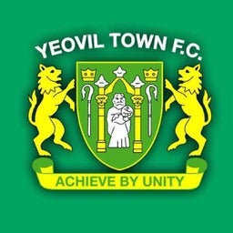

About Yeovil Town
Located in the heart of the town, Yeovil Town Football Club brings the best of football to the local community. Established in [year], Yeovil Town has become a prominent fixture in English football, attracting new fans and supporters every day.
Our mision is: "To unite and uplift our community through the beautiful game of football, enhancing the lives of Yeovil Town fans and the local community.".
Yeovil Town FC, a symbol of pride and passion in the city of Yeovil, brings a rich heritage to English football. With a storied history and unwavering dedication, the club has left an enduring impact on the football community. From remarkable achievements to a strong spirit, Yeovil Town FC embodies the essence of the beautiful game, inspiring fans and players alike.
Huish Park
Located in Yeovil, Somerset, the stadium has been home to Yeovil Town F.C. since its completion in 1990, following their relocation from Huish. Huish Park has a capacity of 9,565 with terraces behind each of the goals.
We are more than football.
- Yeovil Town FC: Defying odds, fulfilling dreams.
- Embrace the true spirit of football with Yeovil Town.
- Join the Yeovil Town family, unite communities.
- Support Yeovil Town, become a guardian of football heritage.